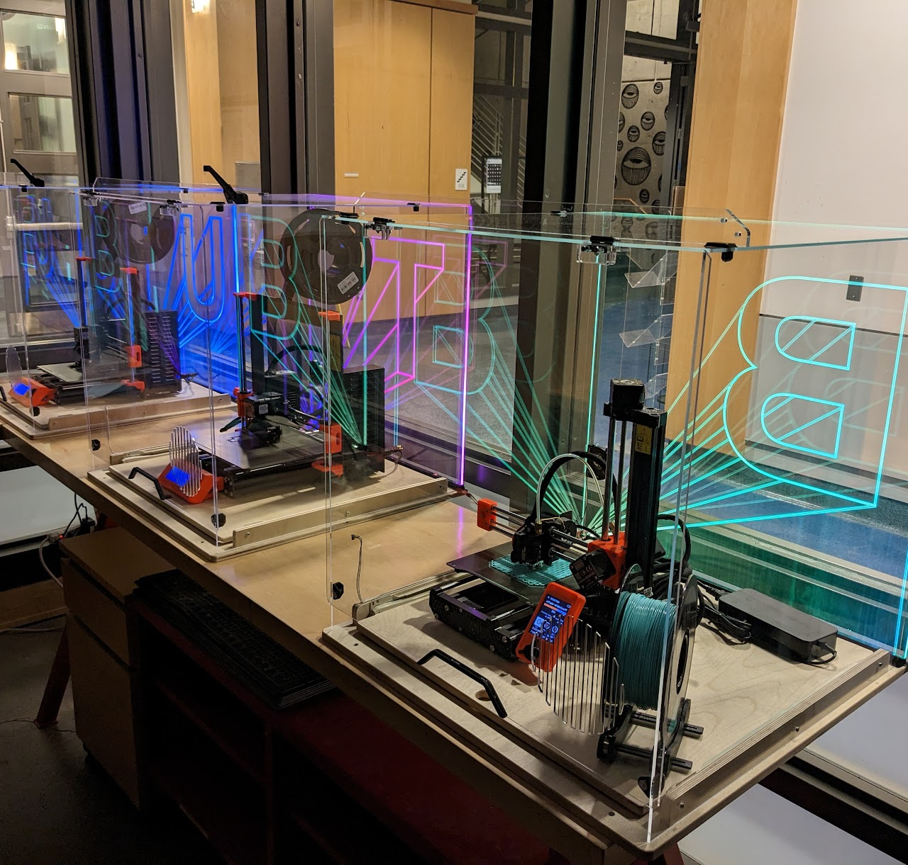

3D Printing equipment and materials are labeled PURPLE .
3D PRINTING
FACULTY : Class assignments requiring 3D printing should be coordinated by LAs, TAs, or instructors.(Questions: "zack.weaver@colorado.edu")
STUDENTS : Assistance with 3D Printing for class assignments should be coordinated with class LAs or TAs first, then "BTU Mischief Makers", if available.
EVERYBODY : 3D printing hardware/software update frequently! Make sure you stay up to date, too.
The Revolution will be printed...

3D Printers located in the main space are for intended use only! Additional 3D printers are available for experimentation. Contact a Mischief Maker to set it up. We got you!
3D Printing is also the subject of some workshops. See workshops on the BTU Lab Calendar .
Jobs are run on a first-come-first-served basis***.
PRUSA SLICER software is provided and required!
"Intended" Use of BTU Lab 3D Printers
- Do not alter any part of the machine.
- BTU uses PLA and ABS material, only. UNLESS other materials are agreed upon with BTU staff.
- Do not train yourself on the use of the machine. There's more to it than YouTube thinks... We're here to help you learn, hands on.
- Do not use third-party slicing software. Use Prusa Slicer, as specified for each machine.
- ***We are updating our file management system to streamline your work. For now, please work directly with BTU staff to get your parts going.***
3D PRINTING EQUIPMENT AND MATERIALS
- Prusa Mk4 FDM printer (x3)
- Prusa Mk3S+ FDM printer (x3)
- Prusa MINI2 FDM printer (x4)
- Additional FDM printers available for experimental projects. See staff!
- 1.75mm PLA filament (black, and random colors)
- 1.75mm ABS filament (black, and random colors)
- Additional materials allowed only with staff approval.